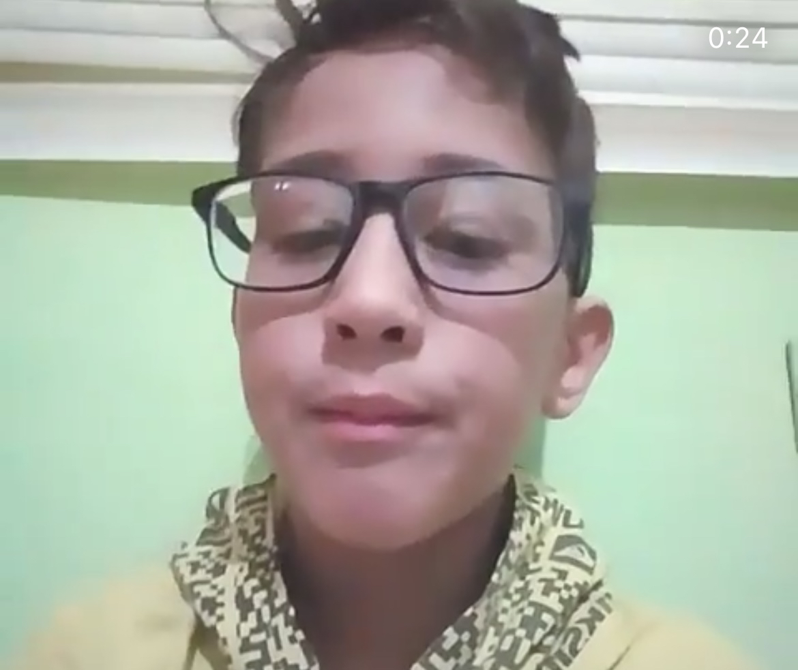
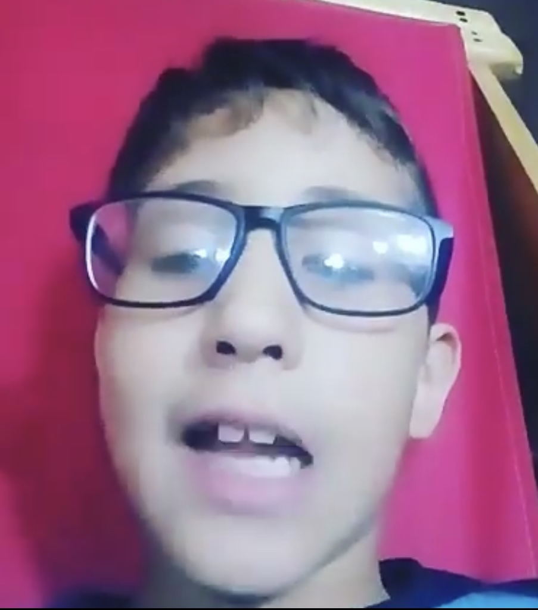

Jaaime Zabala un chico que sueña con tener de novia a la famosa y apresiada por muchos hombres Chun Li.
Gianpiero domenico es un PEQUEÑO chico que le gusta Kanye West y Playboi Carti, y tiene una corta carrera musical
El comienzo
Todo comienza cuando Gianpiero le presto la cuenta a Jaime, Jaime ilusamente penso que se la iba a prestar y ya.
Mi peor enemigo

Gianpiero comenzo a cobrarle a Jaime.
Jaime molesto le contesto !ESE NO ES PEO MIO MALDITO¡ despues se tranquilizo y le dijo que no le iba dar su plata
"Jaime libera mi plata"
Gianpiero euforico se molesto tanto pero tanto que decidio hacerle una tiradera como respuesta a todo lo que le dijo Jaime.
Despues de tantas noches de desvelo practicando el 25 de julio saco su primera cancion Titulada: libera mi plata con esperansas de que Jaime libere su plata.
Jaime Escucha La cancion

Un 26 de julio en la madrugada Jaime ve TikTok y ve que su ex-amigo sube una cancion criticandolo y su furia era tan grande que lo bloqueo de todas las redes sociales
Jaime despues Jaime y Gianpiero charlaron cara a cara y Jaime decidio pagarle su dinero
Finalmente, tras el éxito del concierto y gracias a la solidaridad de sus amigos y seguidores, Jaime pudo pagar su deuda a Gianpiero. Ambos sellaron su amistad con un abrazo y una promesa de seguir trabajando juntos en el futuro.
Una Lección Aprendida

Gianpiero vio que Jaime tardaba mucho en liberar el dinero entonces Gianpiero se enfado y hizo un albun donde critican a Jaime, Pedro, Yoanis.
Y despues de tanto tiempo Jaime libero la plata y todos quedaron contentos